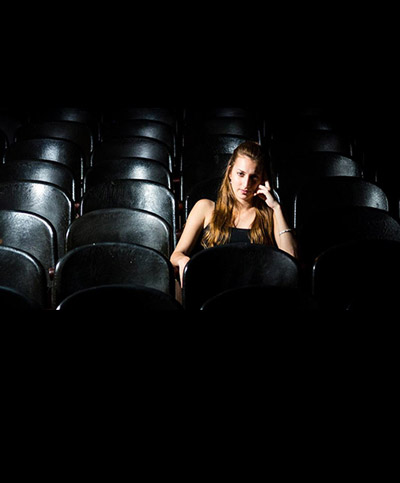

Una artista que se abre camino
"Portal VOS" conversó de forma exclusiva con Victoria Birchner...
Viviste un tiempo acá, en Rafaela, ¿que parte de tu vida?
Desde tercer grado hasta quinto año de la secundaria fui al Colegio San José cursando, a la vez, desde los catorce hasta los dieciséis años la especialidad de canto en la escuela de música. Cuando terminé esos tres años de música me faltaba aún un año para terminar la secundaria y en ese momento comencé a cantar junto a Rubén Carlini por diversos escenarios de la ciudad, dúo con el cual continuamos tocando durante varios años incluso yo ya estudiando en Rosario. Fue, evidentemente, una parte de mi vida muy importante porque ahí fui formando mucho de lo que soy hoy y de lo que sigo eligiendo en mi presente, musicalmente hablando, además de lo mucho aprendido.
¿Qué despertó tu interés por la música?
"La verdad es que, desde que recuerdo, siempre me gustó cantar, me acuerdo de ponerme bien cerca del parlante del equipo de música y cantar encima de lo que sonaba. Pero, según cuentan mis padres, esto se fue dando de manera muy natural, yo ni siquiera sabía hablar y ya cantaba “todo atravesado”. Mis padres eran estudiantes y mientras estaban con sus libros y demás tareas universitarias tenían la radio prendida o escuchaban cassettes de rock nacional, mucha música en castellano, y yo siempre en medio de ellos crecí con música sonando a mi alrededor. Parece ser (de esto sí que no me acuerdo ni un poco) que la primer canción que canté fue “Arráncame la vida” de Chico Novarro".
¿Siempre hiciste folklore?
"Yo soy nacida en Rafaela pero viví hasta los ocho años en Córdoba, en esos años fue mi primer y gran acercamiento a la música folclórica con la aparición de Soledad Pastorutti en el Festival de Cosquín. Mis padres miraban cada festival cordobés por televisión y al parecer me gustó mucho la cantante desde ese momento. De eso sí puedo recordar bastante porque hasta los catorce años no dejé de escucharla, comprar sus discos y saberme su repertorio casi completo, claramente fue una gran influencia para mí. A esa edad empecé la Escuela de Música “22 de noviembre” y tuve la posibilidad de acercarme a otros géneros y a otros compositores y, si bien tuve un breve paso por otros estilos, siempre con mucho respeto, como el rock nacional y el tango, me incliné muy rápidamente a un repertorio folclórico".
A pesar de haber vivido en Rafaela, hoy lo haces en Rosario, ¿cómo es tu vida ahí?
"Estoy viviendo en Rosario hace unos años y ya muy instalada en esta hermosa ciudad. Acá sigo cursando la carrera de canto en la Escuela de Música de la Universidad Nacional de Rosario y a la vez trabajo dando clases en El Espiral, que es un centro cultural autogestionado, tengo algunos alumnos particulares y también doy clases de música en un jardín maternal. Por supuesto que también estoy trabajando con mi proyecto musical, eso jamás queda de lado, es a lo que más importancia le doy y lo que más satisfacciones me da, por suerte estoy en actividad y muchos lugares nos abren sus puertas para tocar en vivo, cada vez más".
¿Cómo llegaste a participar del Pre- Cosquín?
"Claramente las posibilidades y la música en mi vida se van dando de manera natural, sin planes previos, y este también es el caso. El primero que me habla del certamen, que yo desconocía, es Antonio Fassi y ahí empiezo a conocer un poco de qué se trataba. Participé en algunas ediciones de Esperanza, en las dos ediciones que se hicieron en Rafaela y, finalmente, encontré una sede donde se valoró mi modo de ver y de interpretar nuestra música; la sede de Gálvez con sus jurados Gustavo Russo Caronti (Cosquín) y Mario Baroni (Esperanza) me dio el pase al pre Cosquín en el escenario mayor por tres años consecutivos, siempre acompañada por la guitarra de Leo Pretto, y llegando a instancias finales y de desempate el año pasado".
¿Qué te dejó esta experiencia?
"Este año volví a participar habiendo ya decidido que sería la última vez, fui a cerrar una etapa que me dejó muchísimas cosas buenas pero que, a mi parecer, debía terminar.
Me dejó, primero en principal haber conocido hermosas personas del ambiente de la música y de la danza, jurados, participantes, organizadores de la sede y mucho más. Aprendí que no solo el festival permite que las personas conozcan a los artistas sino que el pre es realmente una posibilidad muy grande de mostrarse. Para mi sorpresa mucha gente me ha conocido por el certamen y me lo han hecho saber comunicándose conmigo por diferentes medios, incluso en la plaza misma numerosas personas se me acercaron. La sorpresa sigue porque al volver cada año, incluyendo este último enero, la gente demuestra mucho interés y mucho cariño acercándose y haciéndome saber que me siguen desde otro pre Cosquín y que, incluso, siguen mis actividades por las redes sociales.
Me pongo a pensar y me doy cuenta que son muchas cosas las que me pasaron desde mi primer participación en Cosquín; una de las más importantes para mí fue el acercamiento a la reconocida cantante de nuestro folclore Ángela Irene, a quien admiro y respeto mucho; Ángela fue jurado en la final del año pasado, no hace mucho tuve la posibilidad de conocerla personalmente en su casa en Buenos Aires y me invitó a cantar junto a ella acá en Rosario el próximo 4 de marzo.
Este año después del certamen volví a Cosquín, ya en tiempo de festival, y tuve la alegría y la emoción de compartir música con Eduardo Spinassi y Franco Luciani en la Confiteria Real, uno de los espacios más reconocidos de la ciudad. Si bien eso ya no fue en el pre Cosquín, todo se relaciona con todo".
¿Cómo se siente llegar cada vez más lejos?
"Desde aquel 2011 en Cerro Colorado, donde me encontré por primera vez en una guitarreada compartiendo música con Juan Falú, hasta hoy todo es un sinparar de sorpresas y alegrías. He recibido y sigo recibiendo apoyo, de diversos tipos, de músicos que admiro y respeto mucho, músicos que son muy importantes para nuestra música y para nuestra cultura.
No puedo sentir más que felicidad y ganas de seguir creciendo y viviendo tantas cosas maravillosas. Muchas veces me encuentro en mi casa con lágrimas en los ojos, emocionada, pensando cuántas cosas hermosas estoy viviendo y qué tan bella es nuestra música. Pienso en el camino recorrido hasta ahora, en todas las personas y los espacios que confiaron en mí desde el comienzo, pienso en muchas cosas, es realmente emocionante".
¿Qué planes tenés para este año?
"Este año seguiré con mis actividades y mis estudios, dando clases también en Rafaela a partir de marzo, pero sin dudas mi atención y mis energías estarán centradas en una actividad en particular; a fines de diciembre comencé a trabajar en la grabación de mi primer material discográfico en el reconocido estudio de esta ciudad “BlueRoom”de Carlos Altolaguirre, estoy entusiasmada y muy ilusionada con este proyecto. Es un tiempo de mucho aprendizaje para mí, debo decir que soy una afortunada por estar recibiendo apoyo del gran músico rosarino Franco Luciani quien con su experiencia y generosidad me está enseñando y ayudando con muchas cosas que son nuevas para mí.
Los músicos con quienes comparto este proyecto son Leo Pretto y José “Chey” Ramos en guitarras y Franco Ochat en percusión aunque, sin planearlo y para mi sorpresa, este primer disco va a tener grandes invitados. Ya grabamos dos temas con la armónica de Franco Luciani (uno de ellos es una zamba inédita de su autoría junto al letrista Alejandro Szwarcman) y unos temas con Manu Navarro en guitarra y voz. En los primeros días de este mes viajé a Buenos Aires, al estudio “Liberty” de Juan Libertella, para grabar con Juan Falú una chacarera de su autoría que será parte del material. Participarán también en el disco Marcelo Stenta (guitarra), Eduardo Spinassi (piano), Gabriel Vallejos (acordeón), Sergio Coppoli (recitado), José Gago (flauta), Melania Yossen (violín). Espero estar por la ciudad presentando el disco en unos meses.
Se viene un año con mucha actividad y cansador pero seguramente con muchas satisfacciones".
Fuente:
Portal Vos